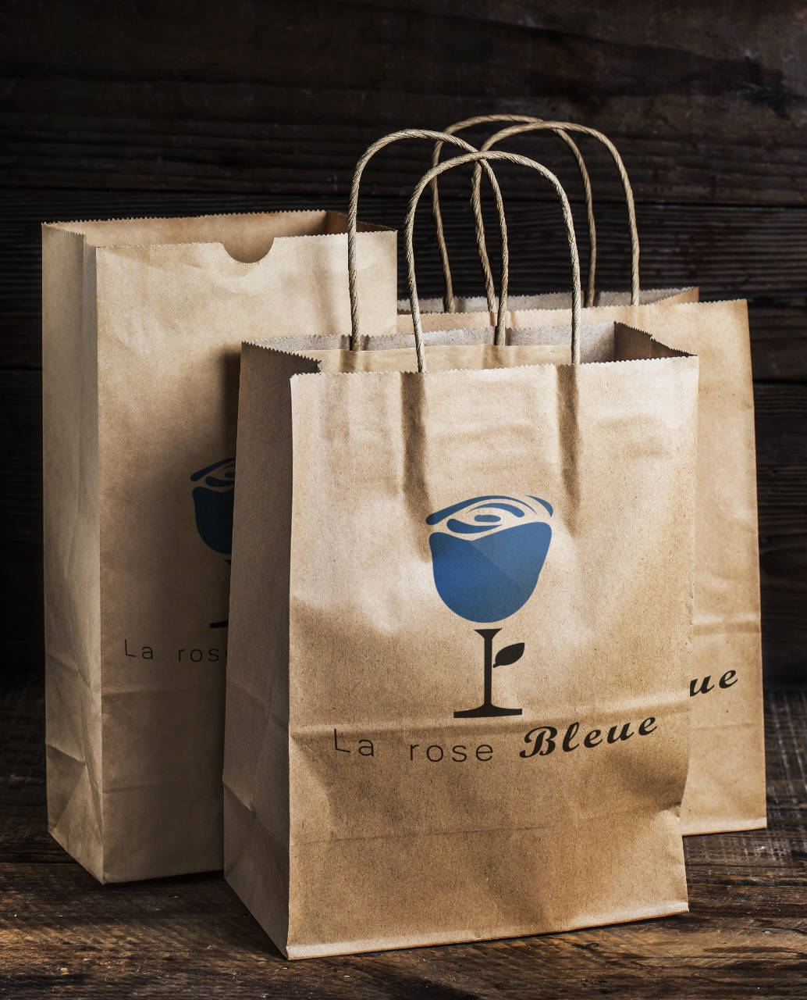
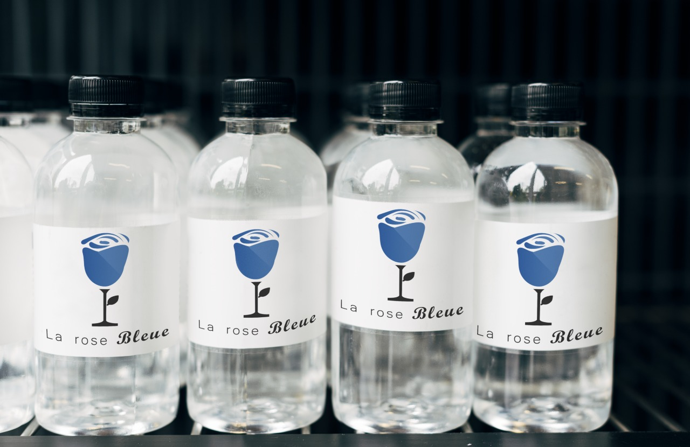
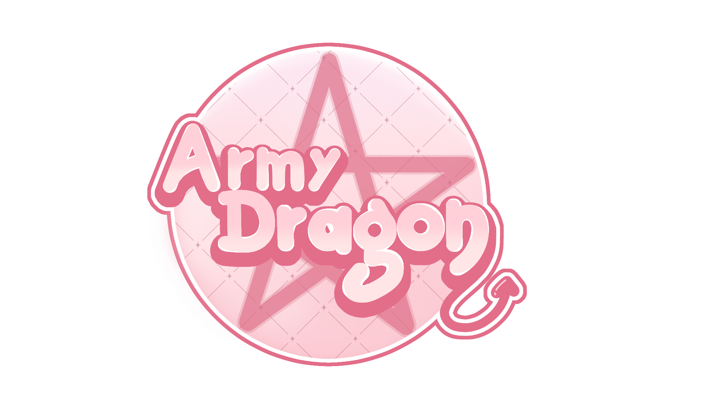
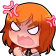
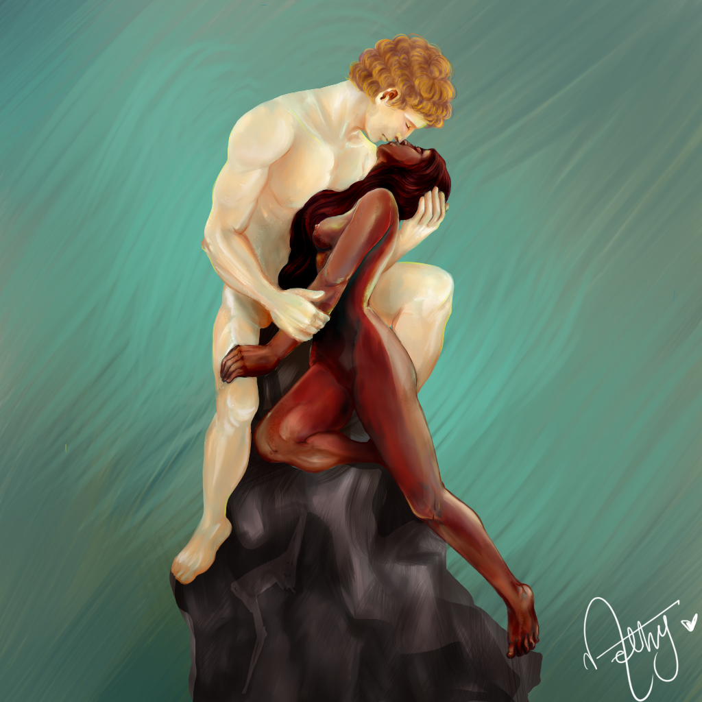
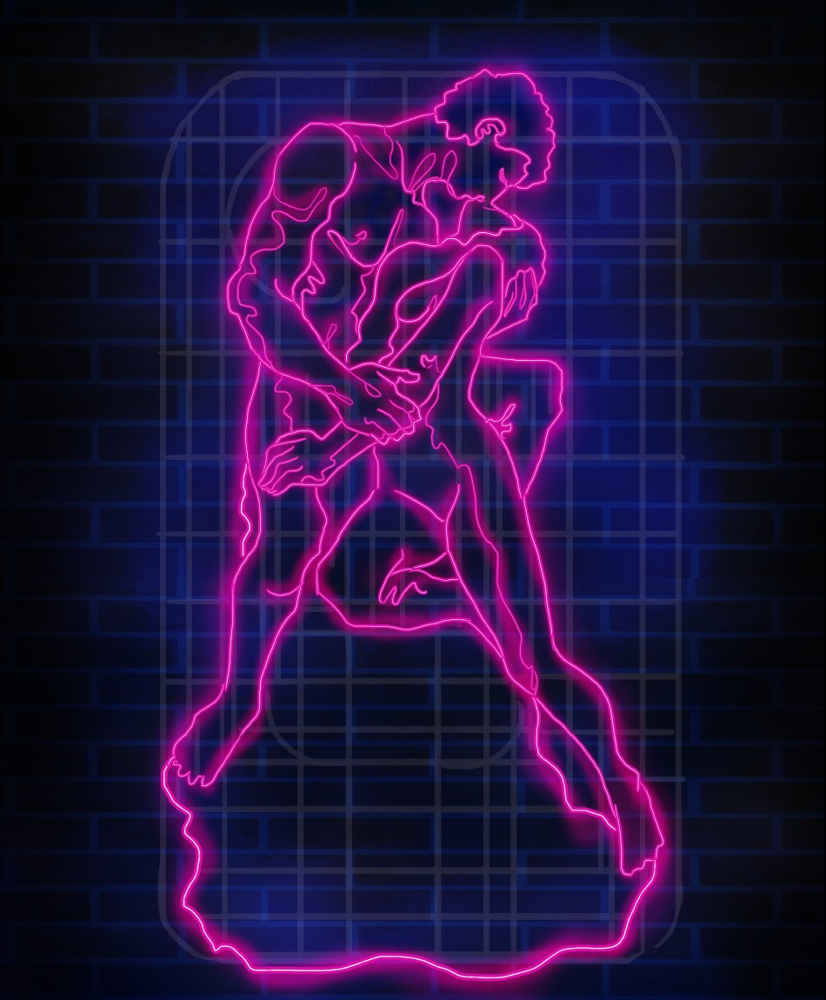
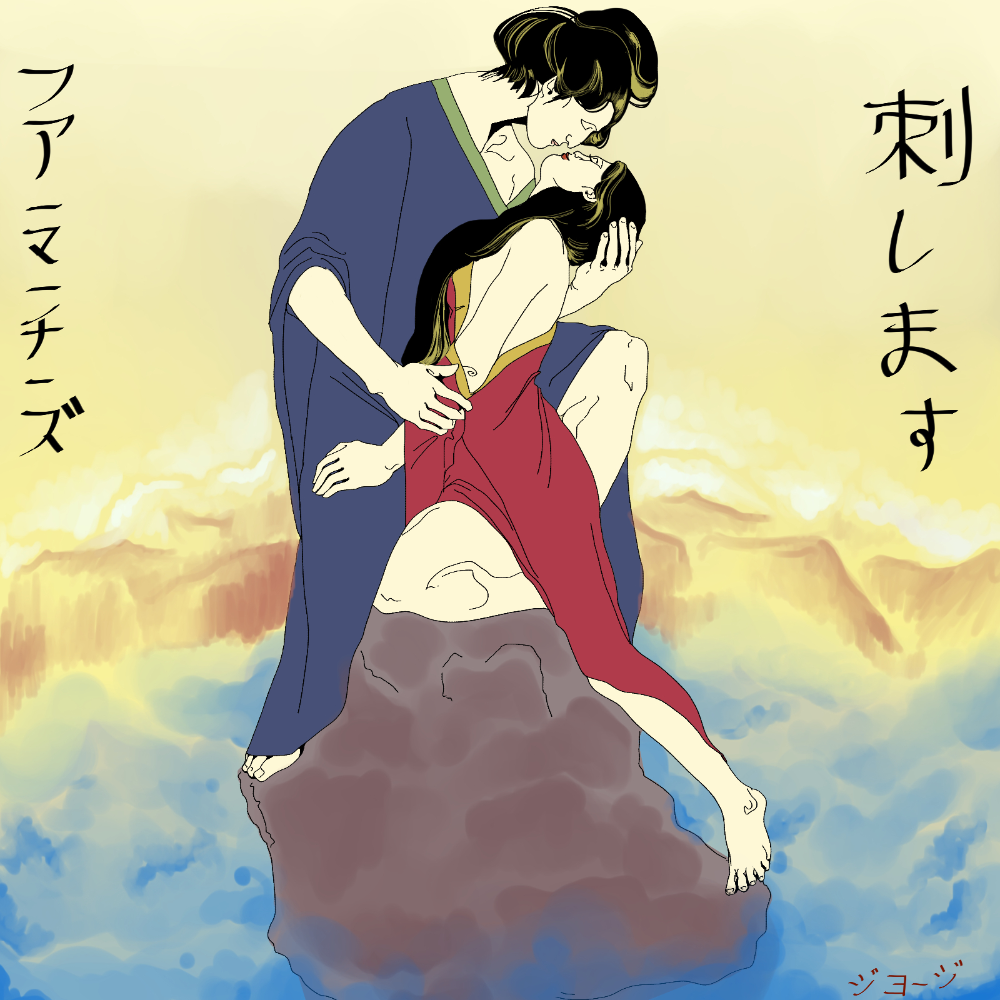
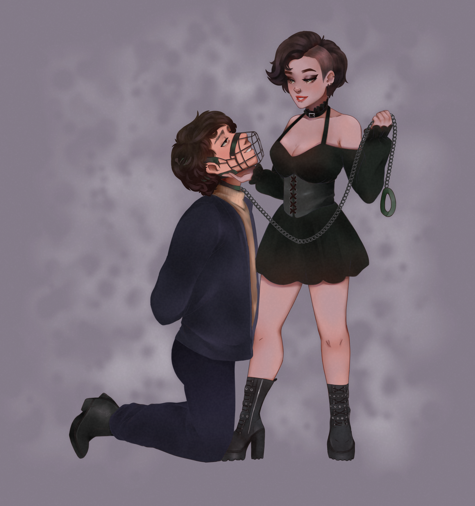
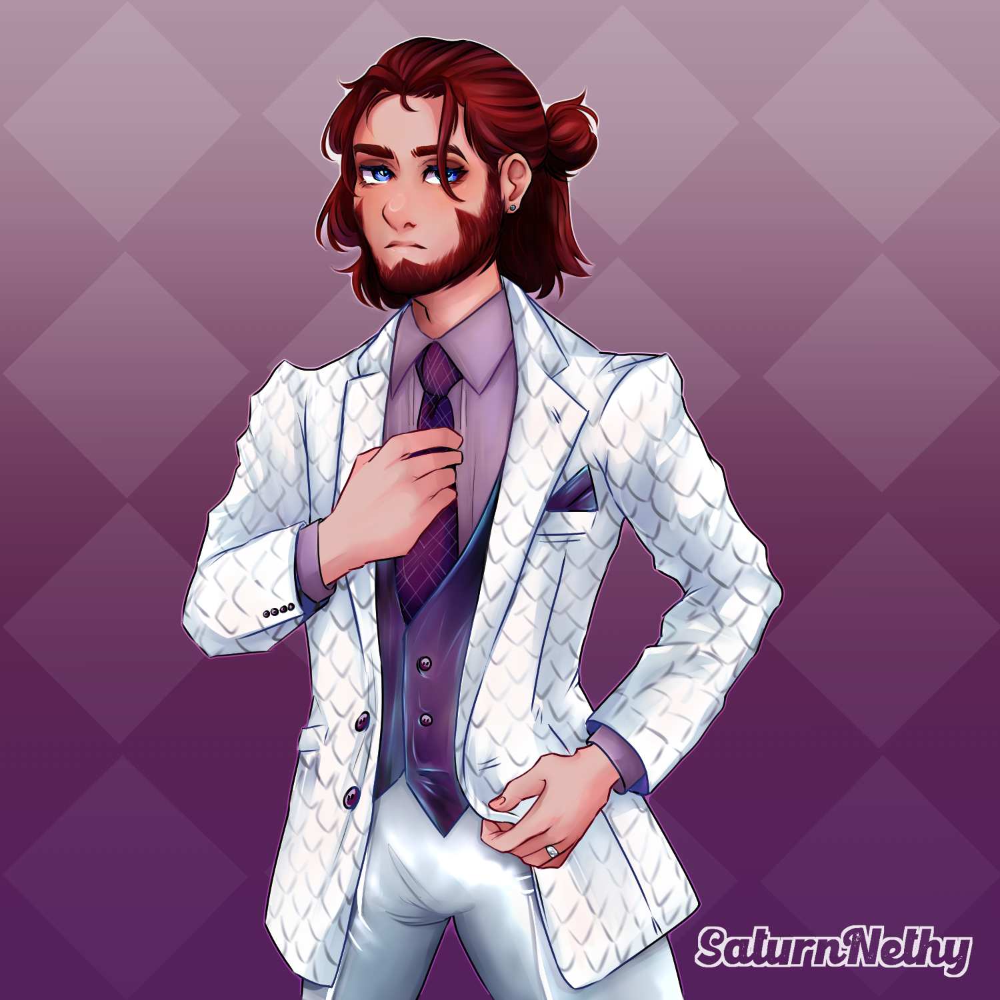

Mi portafolio de Trabajo
Hola, espero puedas apreciar mi trabajo. En este portal es donde
comparto
más abiertamente los tipos de trabajo que realizo :)
Diseño Gráfico
"La rose Bleue"

Este LogoTipo ha sido pensado para un restaurante-Bar, realizado durante las clases de Diseño Digital
Junto con
la realización del logo, realizamos la implantación en objetos dedicados a la marca
para su demostración de uso.
 
"Cereza Fresa"
El trabajo de este LogoTipo fue pedido por un cliente.
Hecho con la gama de colores y simbolos propuestos por el cliente.

"Ginger Spicy"
Este logo se logró más rápido de lo que normalmente como diseñador estoy acostumbrada.
Mi cliente ya tenia la idea clara de lo que
necesitaba y quería para representar su marca.
Lo cual mi parte fue apoyarle a crear sus proyecciones a medios posibles.
Hecho con la gama de colores
y simbolos propuestos por el cliente. Sumado a ello, nos pidió realizar más material gráfico para sus necesidades.


"ArmyDragon- Vtuber Twitch.tv"
Parte de trabajar en internet tiene sus ventajas.
Conocí una persona que requería un trabajo para su imagen
representativa a su canal de Streams en twitch.
A lo cual me dio la oportunidad de ofrecerle mi servicios
y con ello lograr su aprobación con este trabajo realizado.
¡ArmyDragonUwU en Twitch!

Ilustración Digital






